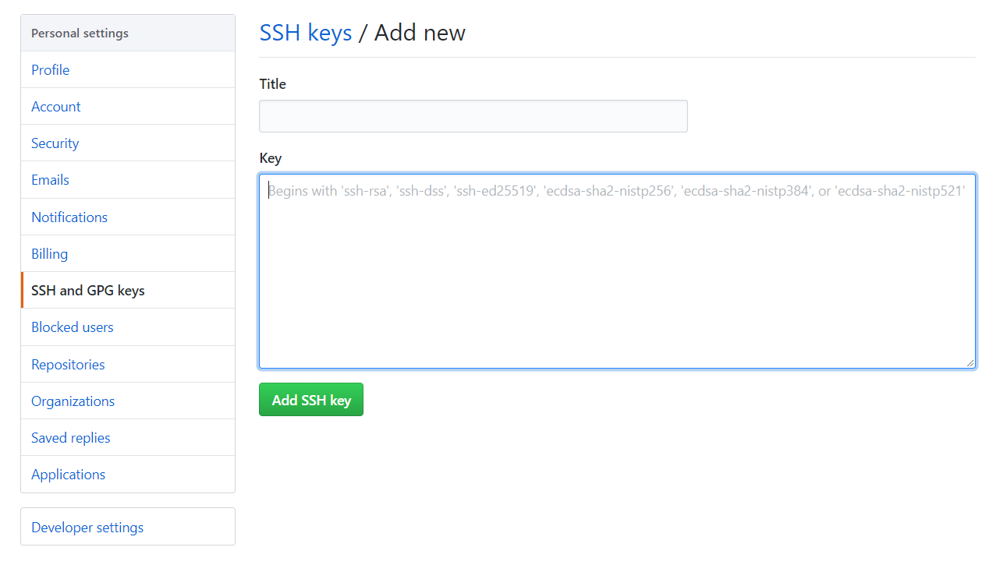

Hexo + Github制作自己的博客网站
第一步 前提准备
第二步 Github准备
1.创建仓库
新建仓库的时候一定要创建你的用户名.github.io格式的仓库，必须是自己的用户名否则无效。以后访问地址就是https://你的用户名.github.io。之后所有的代码都是放在这个仓库里了。
2.配置SSH key
这是为了更为安全地解决本地和服务器的连接。
2.1先设置Git的用户名和邮箱
1 | git config --global user.name "Garyyhy" |
2.2检查是否存在ssh key
1 | cd ~/.ssh |
如果没有那就生成一个
1 | ssh-keygen -t rsa -C "xiangshuo1992@gmail.com" |
生成之后有两种方法取得ssh key
- 打开id_rsa.pub文件拷贝里面的内容
- 使用代码直接在cmd中拷贝显示
cat id_rsa.pub
